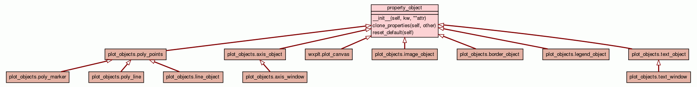

Class property_object
source code

Base class for graph object with properties like 'color', 'font', etc.
Many object have a standard set of properties that describe the
object. Text objects, for example, have a color, font, and style.
These attirbutes often have default values and perhaps only a range
of acceptable values. Every class derived from this one must have
the variable "_attributes" defined at the class level. The keys of
this dictionary are the names of the class attributes. The value
for each key is a list with three entries. The first is the default
value for the attribute, the second is a list of acceptable values
and the third is a short text description of the attribute. FOr
example:
class text_object(property_class):
_attributes = { 'color': ['black',['black','red','blue'],
"The color of the text" ],
'style': ['normal',['normal','bold'],
"The style of the text" ],}
Currently only the first entry is used. The second is rather limited
in functionality, but might be useful for automatically generating
dialog boxes.
Graphite has a more flexible property system, but it is somewhat
complex. Zope also has a nice property structure. If we run into
major limitations with this 15 line implementation, we might look
here for inspiration (or adoption...).
There is no type safety enforced here which could cause so problems
for unsuspecting users. Maybe the optional typing of future Python
versions will mitigate this.
|
|
|
|
|
clone_properties(self,
other)
Reset the objects attributes to their default values. |
source code
|
|
|
|
reset_default(self)
Reset the objects attributes to their default values. |
source code
|
|